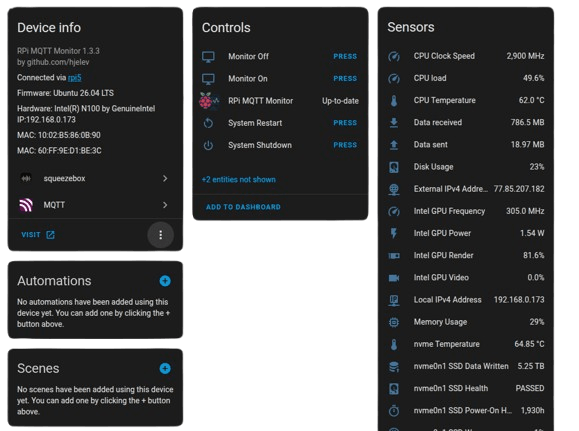
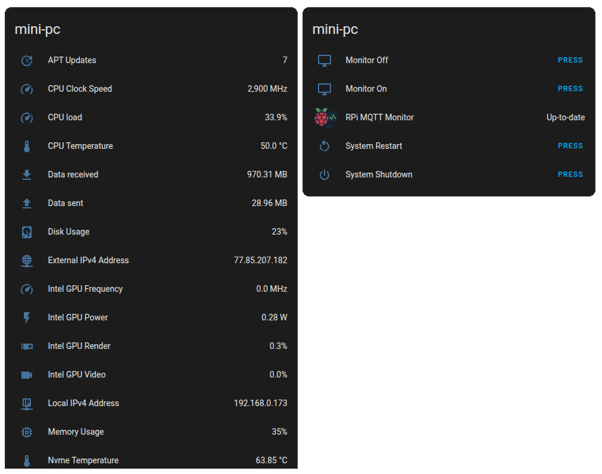

Home Assistant Integration
When discovery_messages = True (the default), a new MQTT device is created in
Home Assistant automatically — no configuration.yaml edits required. Just add it
to a dashboard.
The auto-created device groups all readings, controls (restart, shutdown, update), and sensors under a single Home Assistant entry:

Home Assistant API
To bypass MQTT and push directly to the HA REST API, use the --hass_api flag and
configure hass_host and hass_token in config.py.
Wake on LAN
Run rpi-mqtt-monitor --hass_wake to print the YAML snippet for a Home Assistant
Wake-on-LAN switch preconfigured with your device's MAC address and IP.
Home Assistant Dashboard
